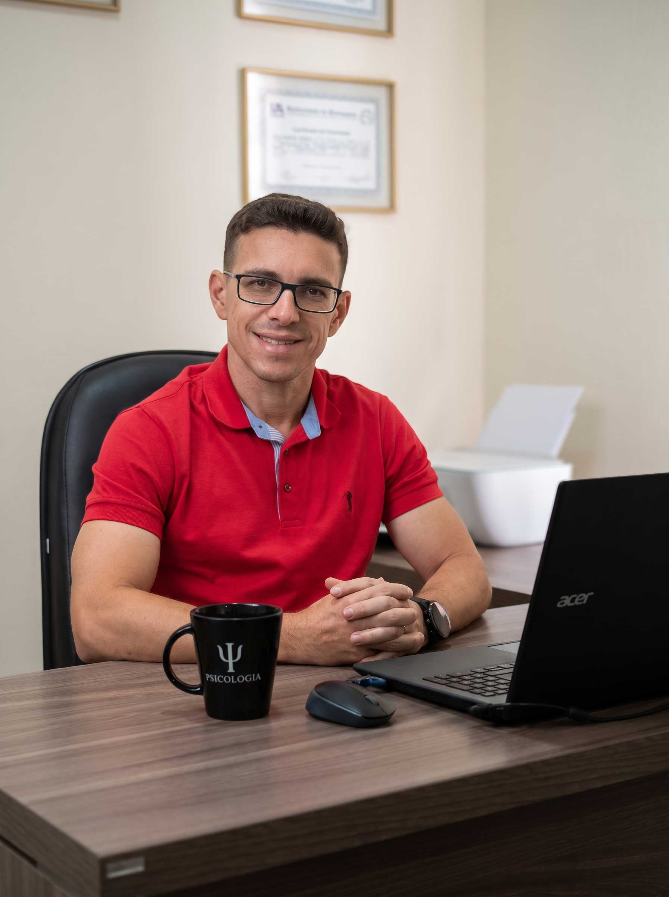

Psicólogo · CRP 06/120048 · São Carlos, SP
Encontre clareza e equilíbrio quando a vida parece acelerar demais.
Um espaço seguro para organizar a mente, tratar ansiedade e lidar com conflitos, conduzido por um profissional com mais de 12 anos de bagagem clínica. Consultório em São Carlos ou online.
Marcar uma conversa
Consultório, Vila Marina · São Carlos, SP
O que costuma trazer
as pessoas até aqui
Alguns caminhos que levam pacientes ao consultório. Talvez você reconheça o seu.
Como começa
o acompanhamento
Você envia uma mensagem sem compromisso pelo WhatsApp e me conta, brevemente, o que está buscando.
Marcamos um primeiro encontro para eu entender a fundo sua demanda e explicar como a terapia pode te ajudar.
Se fizer sentido para ambos, iniciamos as sessões (online ou em São Carlos), construindo juntos o seu equilíbrio emocional.
Dúvidas frequentes
O sigilo é um dos pilares da psicoterapia. Tudo o que é compartilhado durante as sessões é tratado com total confidencialidade, conforme o Código de Ética Profissional do Psicólogo.
Sim. A terapia online é reconhecida pelo Conselho Federal de Psicologia e vem se mostrando tão eficaz quanto a modalidade presencial, com a praticidade de acontecer no ambiente que você escolher.
Não existe um tempo igual para todas as pessoas. A duração depende dos objetivos, da demanda apresentada e do ritmo de cada paciente. Isso é avaliado em conjunto ao longo do processo.
Cada sessão tem duração de 50 minutos e acontece uma vez por semana, em um horário combinado entre nós.
Onde nos encontrar
Venha conhecer nosso espaço em São Carlos, preparado com conforto e discrição para recebê-lo.